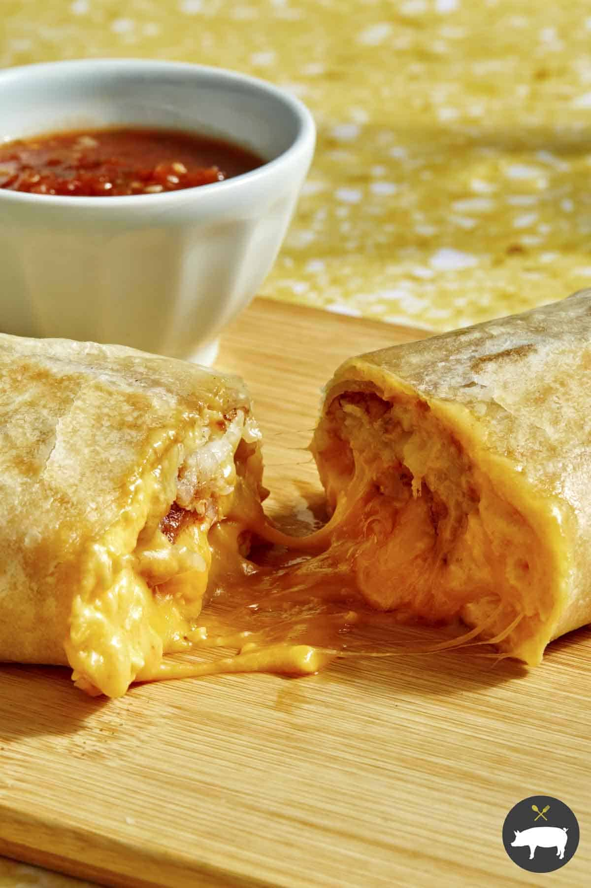

Chorizo Breakfast Burritos
Home

Description
Delicous brekfast burritos. Great for anytime: breakfast, lunch, or dinner!
Ingredients
- Cooking Oil
- 5 Large Tortilla (12")
- 1lb Chorizo (any kind)
- 2 cups Frozen hashbrowns
- 1 cup shredded cheese
- 10 learge eggs
Steps
- Coat frying pan with oil. Cook chorizo over medium heat until brown. Remove from pan
- Beat eggs and scramble on medium-low heat. Salt and pepper to taste. Remove when done
- Cook hasbrowns until no loner frozen and crispy.
- Combine eggs, chorizo, and hashbrowns and mix together.
- Warm Tortillas in microwave fro 30 seconds. Scoop a good portion of chorizo-egg mix into
middle of each tortila and top with shredded chees. Roll up like a burrito.